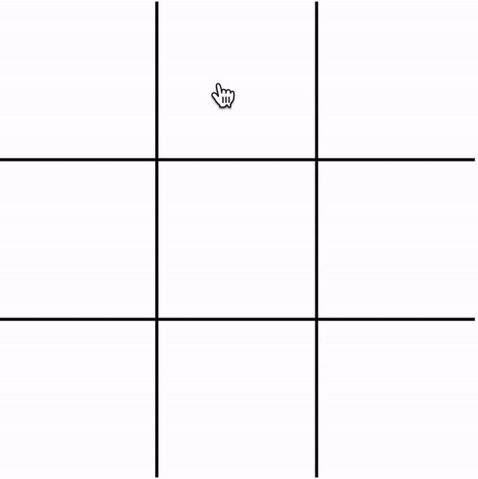
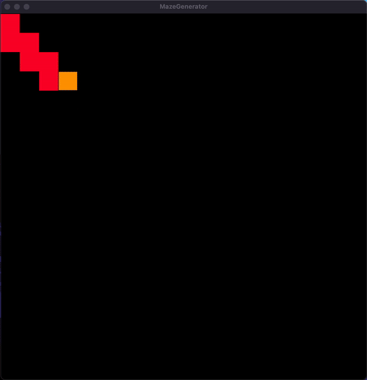

I'M Md Afroz Alam
Tech enthusiast,
founder, innovator. Creating solutions for a better future.
Tic-Tac-Toe AI
The Tic-Tac-Toe project is a dynamic web-based game built using HTML, CSS, and JavaScript. It offers players an interactive gaming experience with a responsive user interface. The highlight of the project is the incorporation of a sophisticated AI opponent powered by the Minimax algorithm, providing players with challenging gameplay and strategic decision-making. With its intuitive design and seamless functionality, the Tic-Tac-Toe game offers hours of entertainment for players of all ages.
Maze Generator

The MazeGenerator is a versatile application designed for maze generation and pathfinding visualization. Implemented in C++ with the Raylib library, it allows users to dynamically generate mazes using the Depth-First Search (DFS) algorithm and visualize pathfinding algorithms like DFS within the generated mazes. Featuring an intuitive user interface with mouse-driven interactions, MazeGenerator offers an engaging platform for users to explore maze generation and pathfinding concepts while enjoying an immersive graphical experience.
Firework Simulation
A mesmerizing C++ project utilizing the Raylib library and CMake for seamless development. This simulation allows users to create dazzling fireworks displays in a virtual environment. With dynamic particle effects and realistic sound effects, users can launch rockets with a mouse click, watching them burst into colorful explosions. Experience the joy of fireworks in a captivating digital space with this immersive and interactive simulation.